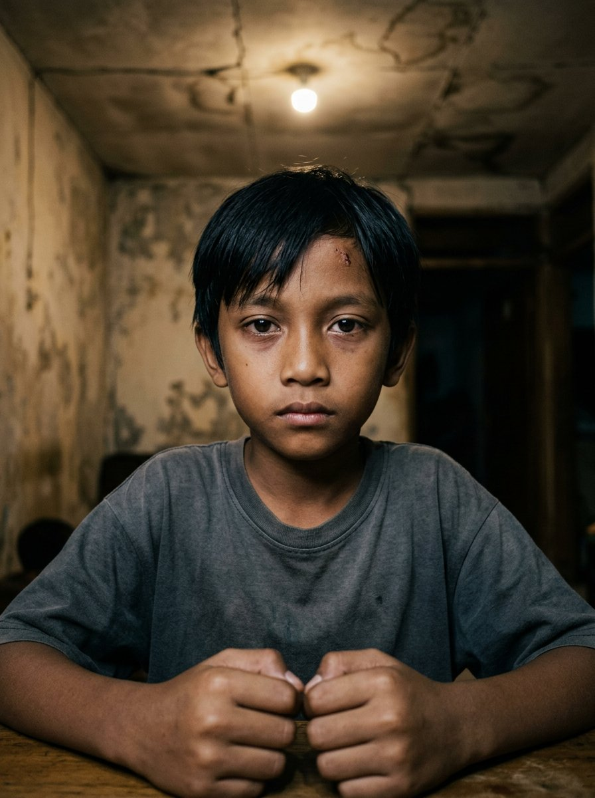

Protagonis
Dhawa Razythan
Lahir17 Januari 2047
Usia Vol. I7 → 10 tahun
AsalKampung kontrakan, Bandung
Bukan anak ajaib. Bukan reinkarnasi dewa. Bukan keturunan klan. Ia menghasilkan panas dengan menggosok dua potong kayu — napas dan kehendaknya sendiri. Pendiam, observatif, pelindung diam-diam bagi Nayra. Tidak pernah mengeluh sakit karena ia mengira semua kultivator merasakan hal yang sama.